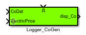
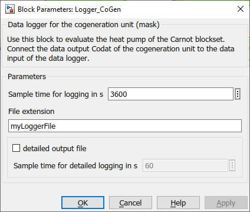

Logger_CoGen
Path: Carnot/Outputs/Logger
Purpose
Creates data files which enable to evaluate the
Cogeneration_Motor model of the Carnot blockset by using
cs_energy_cogen
m-function.
Inputs:
- CoDat (data bus of the
Cogeneration_Motor)
- Electricity Price (bus with the prices
for consumed electric energy)
- Enable : "true" or "1" activates the logging of the data in the
files
Output:
- disp_Co : displaying data of
Cogeneration_Motor
- files : "cogenoutput_extension.mat" and "cogendetailoutput_extension.mat"where
extension is a string you can choose in the parameters of the block.
The file contains the following information in timeseries. The timeseries
appear in a structure with the variable "boiler".
- cogen.Th_in : inlet temperature (heating) in degree Celsius
- cogen.Th_out : outlet temperature (heating) in degree Celsius
- cogen.MassH : time integral of the mass flow on
the heating side in kg
- cogen.Qh : heating energy in J
- cogen.Tmean : average operation temperature in degree Celsius
- cogen.MassFuel : mass of consumed fuel in kg
- cogen.EnergyFuel : energy of consumed fuel in J
- cogen.Welec_in : used electric energy in J
- cogen.Welec_out : produced electric energy in J
- cogen.MassH2O : mass of water in the fume gas in kg
- cogen. MassCO2 : mass of CO2 in the fume gas in kg
- cogen.MassO2 : mass of (remaining) O2 in the fume gas in kg
- cogen.MassSO2 : mass of SO2 in the fume gas in kg
- cogen.MassN2 : mass of N2 in the fume gas in kg
- cogen.MassNOx : mass of NOx in the fume gas in kg
- cogen.MassCO : mass of CO in the fume gas in kg
- cogen.MassCxHy : mass of CxHy in the fume gas in kg
- cogen.Cycles : number of on/off cycles
- cogen.OpTime : operation time of the boiler in s
- cogen.CostFuel : costs of fuel in -
- cogen.CostElecBuy : costs of the consumed electric energy in - (mainly
energy for the controller)
- cogen.CostElecSell : revenues for the produced electric energy in -
For a full list of data point names see
2_Basic_Concepts.
Parameters and Dialog Box
The file "cogendetailoutput_extension.mat" is only written
if the parameter "detailed output" is activated. Detailed outputs
are written with a 60 s timestep only if the motor is working.

Characteristics
Direct Feedthrough Yes
Sample time entered
by user in block parameters
Vectorized No